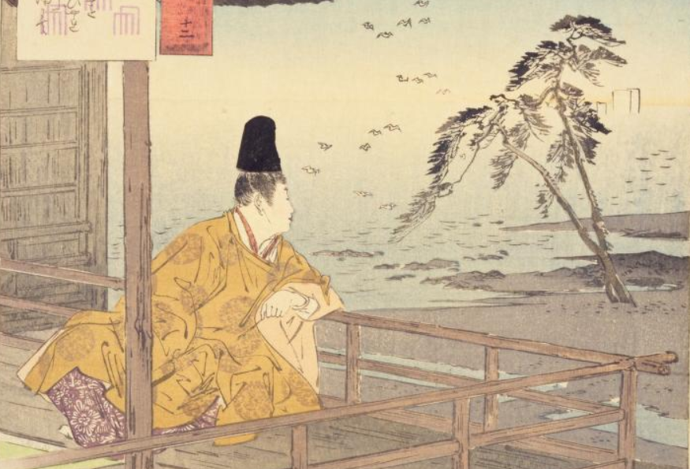

第1部・第2部の主人公。桐壺帝と桐壺更衣の子で桐壺帝第二皇子。臣籍降下して源姓を賜る。いったん須磨に蟄居するが、のち復帰し、さらに准太上天皇に上げられ、六条院と称せられる。
期待したような女の子ではないとすぐに違う女の子に行くなど
光源氏の父。子に源氏のほか、朱雀帝（のち朱雀院）、蛍兵部卿宮、八の宮などが作中に出る。末子とされる冷泉帝は、桐壺帝の実子でなく、源氏の子。
桐壺帝の更衣。光源氏の母。
桐壺帝の先帝の内親王。桐壺更衣に瓜二つであり、そのため更衣の死後後宮に上げられる。源氏と密通して冷泉帝を産む。
左大臣の娘で、源氏の最初の正妻。源氏より年上。母大宮は桐壺帝の姉妹であり、源氏とは従兄妹同士となる。夫婦仲は長らくうまくいかなかったが、懐妊し、夕霧を生む。六条御息所との車争いにより怨まれ、生霊によって取り殺される。
桐壺帝の兄の御息所。源氏の愛人。源氏への愛着が深く、その冷淡を怨んで葵の上を取り殺すに至る。夕顔のことも生き霊となって取り殺したという説もある
50代の女性。色好みで有名。源氏と一夜を共にする。
素性を明かさないまま光源氏と関係を持つ。若くして亡くなる。
男性からの人気がものすごく高い。小悪魔な性格とミステリアスな雰囲気が似ていると感じた。
光源氏の妻の一人。不美人で夫婦の営みはたえていたが、家庭的な性格のため子育てを任された。
欲張らないで光源氏に子供を任されるまで信用された女性。面倒見が良くて欲張らない性格などが似ていると感じた。
源氏が不遇時にその愛人となり、明石中宮を生む。不本意ながら娘を紫の上の養女とするが、入内後再び対面し、以後その後見となる。
藤壺中宮の姪、兵部卿宮の娘。幼少のころに源氏に見出されて養育され、葵の上亡きあと、事実上の正妻となる。源氏との間に子がなく、明石中宮を養女とする。晩年は女三宮の降嫁により源氏とやや疎遠になり、無常を感じる。
気遣い上手でしっかり者。歳も下なのでしっかり者の妹キャラに似ていると感じた。
常陸宮の娘。大輔の命婦の手引きで源氏の愛人となるが、ひどく痩せていて鼻が象のように長く、鼻先が赤い醜女。
方違えで訪れた源氏と一夜をともにするが、自分が人妻であることを考え、源氏を遠ざける。関屋では、逢坂関にて源氏の一行とすれ違い、文を交わす場面がある。その後、常陸介に先立たれ出家。
朱雀院の第三皇女で、源氏の姪にあたる。藤壺中宮の姪であり、朱雀院の希望もあり源氏の晩年、2番目の正妻となる。柔弱な性格。柏木と通じ、薫を生む。
右大臣の娘。入内直前だったが光源氏と関係を持つ。関係はばれ、光源氏は右大臣たちから怒りを買う。
内大臣の長男。女三宮を望んだが果たせず、降嫁後六条院で女三宮と通じる。のち露見して、源氏の怒りを買い、それを気に病んで病死する。
左大臣の子で、葵の上の同腹の兄。源氏の友人でありライバル。恋愛・昇進などで常に源氏に先んじられる。
源氏の長男。母は葵の上。
第3部の主人公。源氏（真実には柏木）と女三宮の子。